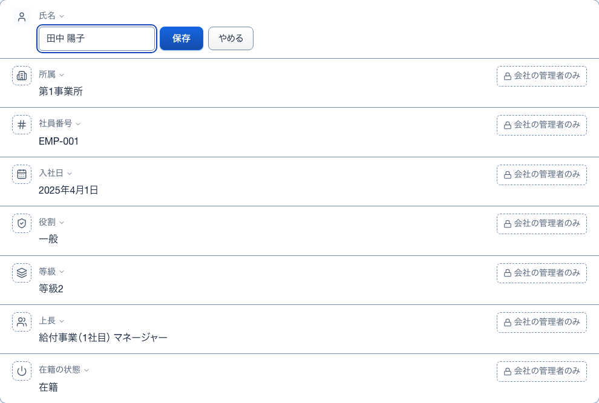
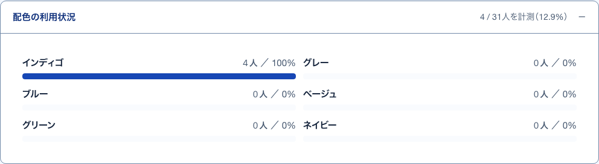
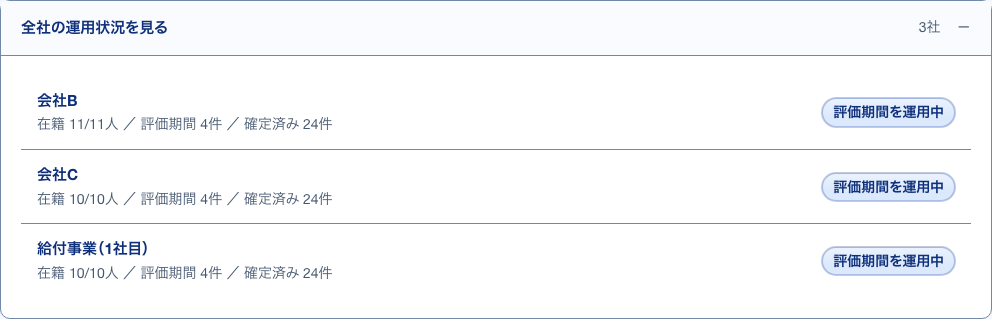
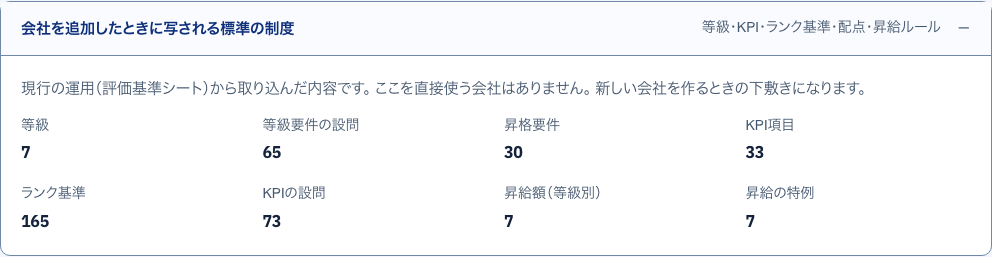
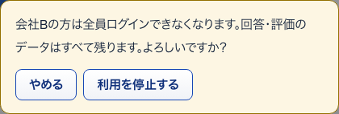

5その場で直す開いて見る
S02 自分の情報 ・ 押すもの: 「変える」 ・ 閉じる: やめる

中に出るもの
- その項目の入力欄
中で押せるもの
- 保存: 入れた値を保存し「保存しました。」と出す
- やめる: 入力をやめて元の表示に戻す。Esc でも同じ
6配色の利用状況開いて見る
S04 システム運用 ・ 押すもの: 「配色の利用状況」

中に出るもの
- 測れた人数と割合
- 配色ごとの人数と割合の棒（インディゴ・グレー・ブルー・ベージュ・グリーン・ネイビー）
7全社の運用状況開いて見る
S04 システム運用 ・ 押すもの: 「全社の運用状況を見る」

中に出るもの
- 会社名
- 在籍 n/n人 ／ 評価期間 n件 ／ 確定済み n件
- 状態の札
中で押せるもの
- 会社名: その会社でしぼった利用者一覧へ移る（→ S06）
8写される標準の制度開いて見る
S05 会社一覧 ・ 押すもの: 「会社を追加したときに写される標準の制度」

中に出るもの
- 等級
- 等級要件の設問
- 昇格要件
- KPI項目
- ランク基準
- KPIの設問
- 昇給額（等級別）
- 昇給の特例
- それぞれの件数
9追加のあとの表示押したあとに出る
S05 会社一覧 ・ 押すもの: 「この内容で会社を追加する」 ・ 閉じる: 次の入力を始める ・ 押すと保存や送信が起きるので、写真は載せていない
中に出るもの
- 会社を追加し、管理者アカウントを作った知らせ
- 写した制度の件数
- 仮パスワードの控え（注意書き・欄名・値）
中で押せるもの
- 仮パスワードの控えを見る: 今回発行した値を開く。「控えを隠す」で閉じる
- 写す: 値を写す
- 次の入力を始める: 欄を空にして次の会社を入れる
10利用を停止する確かめる小窓
S05 会社一覧 ・ 押すもの: 「利用を停止する」 ・ 閉じる: やめる

確認文と停止の効果
- この会社での利用が止まり、他社の有効な所属は使える
- 写真の「全員」は、他社所属の扱いまで表していない
- 回答・評価のデータはすべて残る
中で押せるもの
- やめる: 停止せずに小窓を閉じる
- 利用を停止する: 会社の利用を止め、札が「停止中」になる